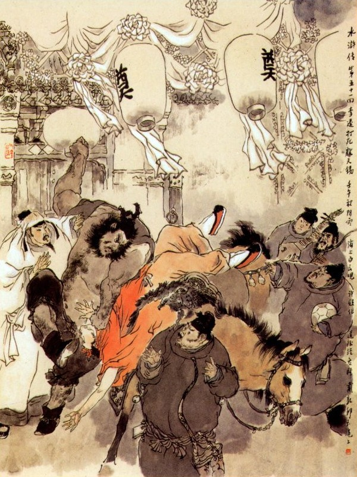
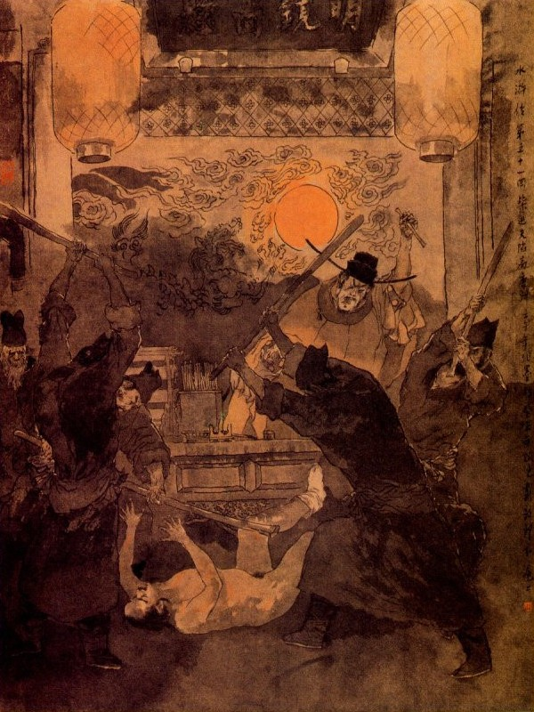
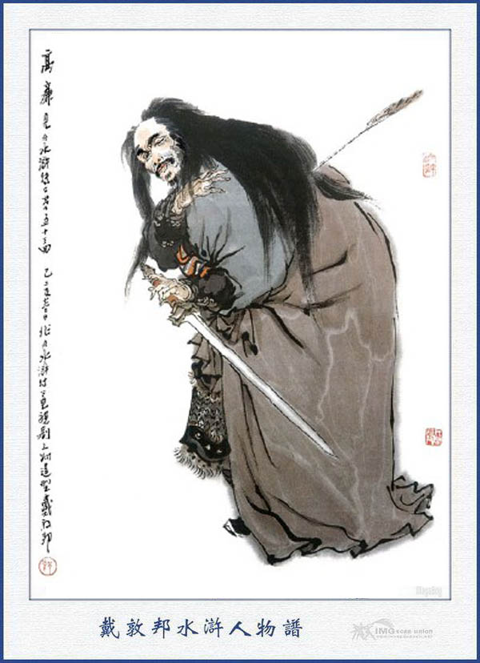

Khi đó Chu Đồng nói với mọi người rằng:
- Nếu các ngài có lòng cho tôi cùng lên sơn trại thì xin giết tên Hắc Toàn Phong đi mới được.
Lý Quỳ nghe nói, cáu lên mà rằng:
- À, Anh định giết tôi sao? Việc này là Tướng lệnh của Tiều Cái, Tống Giang chứ việc gì đến tôi mà.
Chu Đồng cũng hăm hăm giận dữ toan xông đến đánh nhau ngay. Hai người kia lại phải túm vào mà khuyên ngăn mãi.
Chu Đồng bảo với ba người kia rằng:
- Nếu có Hắc Toàn Phong ở đó, dẫu chết, tôi cũng không lên sơn trại.
Sài Tiến nói:
- Cái đó thì dễ lắm, để Lý Đại Ca ở đây với tôi, còn ba các ông cứ về sơn trại, cho Tiều Cái, Tống Giang bằng lòng là được rồi.
Chu Đồng nói:
- Hiện nay đã xảy ra sự thể như vậy, chắc là Quan Phủ tư giấy về huyện Vận Thành mà tróc nã cả nhà tôi thì làm sao cho đặng?
Ngô Dụng bảo:
- Xin ngài cứ an tâm, có lẽ bây giờ Tống Công Minh đã cho đón quý quyến lên sơn trại rồi đó.
Chu Đồng nghe nói đến đó, mới hơi thư tâm một chút, Sài Tiến bèn sai đặt tiệc thiết đãi Chu Đồng cùng Ngô Dụng, Lôi Hoành rồi chiều hôm đó ba người cùng từ tạ mà đi lên sơn trại, Sài Tiến đóng ba cỗ ngựa, để đưa ba người ra đến cửa quan.
Khi sắp sửa ra đi, Ngô Dụng gọi Lý Quỳ dặn mà bảo rằng:
- Ngươi ở nhà Đại Quan Nhân đây, tất phải giữ gìn cẩn thận, không nên ngông ngáo làm càn rồi trong một vài tháng nữa, đợi khi Chu Đồng bớt giận, bấy giờ sẽ đón ngươi về sơn trại mà mời Đại Quan Nhân đây, sẽ lên nhập đảng một thể.
Lý Quỳ nghe nói vâng lời bái biệt quân sư. Đoạn rồi Ngô Dụng, Lôi Hoành cùng Chu Đồng bái biệt Sài Tiến mà cùng nhau đi lên Sơn Bạc. Khi ra khỏi địa phận Thương Châu, ba người giao ngựa cho trang khách đem về rồi cùng nhau xuống bộ mà đi. Được ít lâu về tới hàng rượu Chu Quý, liền sai người lên báo cho sơn trại biết.
Tiều Cái, Tống Giang nghe báo cả mừng. Dẫn các Đầu Lĩnh dóng trống mở cờ, cùng nhau ra bến Kim Sa để đón. Ngô Dụng và Lôi Hoành đưa Chu Đồng vào đến bến Kim Sa, cùng các vị Đầu Lĩnh thi lễ rồi cùng nhau lên ngựa, đi vào Tụ Nghĩa Sảnh mà chuyện trò mọi nỗi hàn huyên. Chu Đồng nói với các vị Đầu Lĩnh rằng:
- Tôi nay được các ngài có lòng hạ cố cho đón lên đây, thực là cảm ơn vô hạn, song hiện còn gia quyến ở nhà, nếu nhất lỡ Quan Phủ tư giấy lôi thôi bắt bớ thì biết lấy ai mà cứu cho ra mới được?
Tống Giang cười mà đáp rằng:
- Bà chị cùng cháu tôi đã đưa lên đây lâu rồi, Huynh trưởng còn điều chi mà ngại?
Chu Đồng hỏi:
- Hiện nay ở đâu, xin Đầu Lĩnh cho tôi được biết?
Tống Giang đáp:
- Hiện ở với thân phụ tôi đó, xin Huynh trưởng qua thăm một chút cho được yên tâm.
Nói đoạn đưa Chu Đồng đến chỗ Tống Thái Công ở rồi gọi vợ con Chu Đồng ra để cùng nhau trò chuyện. Vợ Chu Đồng nói với chồng rằng:
- Mấy bữa nay có mấy người đem giấy đến nói rằng: Tiêt Cấp đã nhập đảng ở Lương Sơn và giục tôi phải xếp dọn hành lý mà lên đây ngay lập tức. Nhân vậy tôi phải đến đây, song đợi mãi không thấy Tiết Cấp về đây, nên không biết đầu đuôi ra sao mà nói.
Bấy giờ Tống Giang mới đem lời trung trực mà xin lỗi với vợ chồng Chu Đồng rồi mời Chu Đồng cùng Lôi Hoành xuống đóng trại ở dưới núi và nhất diện sai mở tiệc để ăn mừng.
Bắc Nam buộc mối thâm tình,
Rồi đây nước biếc non xanh còn dài,
Cùng nhau ngang dọc ở đời,
Trăm năm chỉ thẹn với lời bình sinh.
Nói về Quan Phủ Thương Châu đêm hôm ấy không thấy cậu ấm về thì trong lòng lấy làm nóng nảy lo sợ, liền cho người đi tìm kiếm khắp cả mọi nơi. Đến sáng hôm sau thấy người về báo là cậu ấm đã bị giết và hiện còn bỏ xác ở trong khu rừng đó. Quan Phủ nghe báo như sét đánh ngang tai, lập tức theo đến khu rừng để khám nghiệm. Khi tới nơi thấy con trai nằm chết ở đó thì vật mình lăn khóc hồi lâu rồi sai người sửa quan để đem chôn. Đoạn rồi tư giấy sang huyện Vận Thành, tư đi các nơi để dò bắt Chu Đồng. Cách mấy hôm sau thấy công văn huyện Vận Thành tư sang nói rằng:
- Chu Đồng đã đem cả gia quyến mà trốn đi đâu mất.
Còn về phần Lý Quỳ ở bên Sài Tiến, thấm thoát đã hơn một tháng rưỡi, chợt một hôm có một người ra dáng hối hả, đem một phong thư đến cho Sài Đại Quan Nhân. Sài Tiến xem thư cả kinh mà rằng:
- Nếu vậy thì ta phải thân hành ra đi một phen mới được.
Lý Quỳ hỏi:
- Đại Quan Nhân có việc gì cần cấp như vậy?
- Tôi có một ông chú là Sài Hoàng Thành, hiện ở Cao Đường Châu, nay bị tên Ân Thiên Tích là anh em vợ của Tri Phủ Cao Liêm đến chiếm cứ vườn hoa làm cho chú tôi phải tức tối mà đâm ra sinh bệnh, nguy hiểm đến nơi, nay tính mệnh cơ hồ khó sống, nên mới gọi tôi sang đó để dặn dò công việc về sau. Vả chưng chú tôi lại không có con cái gì, thế tất tôi phải sang ngay mới được.
- Đại Quan Nhân định đi, tôi xin theo ngài cùng đi một thể có được không?
Sài Tiến nói:
- Nếu Đại Ca cũng đi một thể cho vui thì còn gì hơn nữa?
Nói đoạn liền sai người sửa soạn hành lý, chọn mười lăm con ngựa tốt và chọn mấy người trang khách thạo việc rồi sáng hôm sau cùng nhau lên ngựa ra đi. Khi tới Cao Đường thẳng vào trong phủ Sài Hoàng Thành. Sài Tiến để Lý Quỳ cùng đám người nhà, ở ngoài nhà ngoài rồi một mình vào nhà trong thăm chú. Sài Tiến vào đến trong phòng hỏi thăm bệnh tình rồi ngồi vào ghế ở bên cạnh nằm mà nức nở khóc không thôi. Người vợ kế Sài Hoàng Thành chạy ra khuyên giải mà rằng:
- Đại Quan Nhân đi đường khó nhọc tới đây, hãy xin thư tâm an nghỉ, chớ vội lo nghĩ phiền não làm chi?
Sài Tiến gạt nước mắt mà thăm hỏi đầu đuôi mọi lẽ. Người vợ kế Sài Hoàng Thành đáp rằng:
- Ở đây có Tri Phủ mới đến, tên là Cao Liêm, anh em thúc bá với Cao Thái Úy ở Đông Kinh, kiêm giữ binh quyền bản phủ, nương cậy thế anh, uy quyền rất là lộng lẫy. Hắn nuôi một người anh em vợ là Ân Thiên Tích, vẫn thường gọi là Ân Trực Các, tên này tuổi tuy còn nhỏ, song ỷ thế Tri Phủ mà làm càn làm dở, vô sở chí. Sau nhân có mấy đứa hùa đảng, tâu nộp với hắn là nhà ta có vườn hoa rất đẹp, lại có Thủy Đình ỏ trong, hắn bèn dẫn đến hai ba mươi đứa gian đồ vào đây để xem rồi bắt nhà ta phải dời đi chỗ khác, cho hắn đến ở đây. Hoàng Thành thấy vậy, có bảo hắn là nhà ta vốn dòng dõi kim chi ngọc diệp, hiện có đơn thư thiết khoán của hoàng triều, không có phép nào đến đây mà ăn hiếp thế được? Ngờ đâu thằng cha ấy nhất định không nghe, bắt nhà ta phải dọn đi ngay lập tức. Hoàng Thành phẫn uất mà sinh ra bệnh, cơm cháo không ăn, thuốc men vô ích. Đến bây giờ chỉ còn thiếu một phần chết nữa thôi, nếu không có Đại Quan Nhân sang đây thì công việc thực là rắc rối, không còn biết trông cậy vào đâu cho được? Sài Tiến nghe nói thở dài mà rằng:
- Thôi thím cứ yên tâm, cố tìm thầy mà thuốc men cho chú, sau nó có nhũng nhiễu điều chi, cháu khắc cho người về Thương Châu đem đan thư thiết khoán đến đây rồi ta sẽ liệu. Cho dẫu đến ngay trước mặt Thiên Tử cũng không sợ gì cả.
Người thím cảm ơn mà rằng:
- Nếu vậy các công việc, xin Quan Nhân cáng đáng giúp cho, chứ như bây giờ còn làm gì được nữa?
Sài Tiến vâng lời, ngồi trông nom hầu chú hồi lâu rồi trở ra nhà ngoài nói chuyện cho Lý Quỳ cùng mọi người được biết. Lý Quỳ nghe vậy, nhảy lên mà rằng:
- Quân ấy thế thì vô lý quá, tôi có đôi đại phủ, để tôi sửa cho nó một bữa đã rồi sẽ liệu.
Sài Tiến gạt đi mà rằng:
- Lý Đại Ca không nên vội nóng, mình cần chi mà phải đối đầu với nó, dẫu nó ỷ thế là càn, song nhà tôi hiện có sắc chỉ của vua, can chi phải nói với nó?
Còn chỗ kinh sư to bằng mấy nó, khắc là công việc phải phân minh có lẽ nào ta sợ.
- Ối chà! Luật với pháp thì làm gì. Nếu nó dùng được pháp luật thì thiên hạ đã không đến nỗi rối loạn? Tôi đây thì cứ đánh trước rồi mới nói, nếu nó còn thưa kiện ở đâu thì chém luôn một lũ quan ranh ấy đi một thể chứ cần gì?
Sài Tiến nói rằng:
- Không trách Chu Đồng với Đại Ca không yên với nhau được. Ở đây là chốn cấm thành, có phải đâu như sơn trại nhà bác mà làm liều được hay sao?
Lý Quỳ nói:
- Cấm thành mà làm gì? Ở Giang Châu, ở Vô Vi Quán, dễ thường tôi không giết người đấy hẳn.
Sài Tiến lại mà rằng:
- Được, hãy để tôi xem sao đã. Nếu vô sự thì xin bác hãy cứ ngồi yên đây cho, thế là tốt rồi.
Đương khi nói chuyện, bỗng thấy mấy người tỳ thiếp hớt hãi chạy ra mời Sài Tiến vào phòng Hoàng Thành. Sài Tiến chạy vào tới nơi, thấy Hoàng Thành dàn dụa đôi hàng nước mắt, nói với cháu rằng:
- Cháu là một người chí khí hiên ngang, không thể để nhục đến tổ tiên ngày trước, ta nay bị Ân Thiên Tích hiếp bách quá chừng, khó lòng sống được, vậy cháu xin nghĩ đến tình xưa, đem thư vào kêu với Thánh Hoàng để báo thù cho ta, ta đây dẫu thác xuống suối vàng cũng được cảm ơn đôi chút.
Nói xong nấc lên một tiếng rồi nhắm mắt buông tay mà về nơi tiên giới. Sài Tiết thấy vậy ôm chú khóc lóc kêu gào rất thảm thiết. Người thím sợ khi Sài Tiến quá thương nên bệnh, vội lấy lời uyển chuyển mà than rằng:
- Đại Quan Nhân chớ nên phiền muộn làm chi, phải yên tâm mà lo liệu việc nhà mới được.
- Hiện nay giấy má còn để ở nhà tôi cả, tất phải sai người lập tức lấy về đây mà làm sớ tâu về triều đình mới được, bây giờ hãy cho khâm liệm quan quách làm lễ thành phục rồi sau sẽ liệu việc nhà.
Nói đoạn liền theo quan chế, mua sắm quan quách, bày đặt linh sàng rồi cùng nhau làm lễ thành phục. Lý Quỳ nghe tiếng ở trong nhà than khóc thì giơ tay mắm miệng buồn bực vô cùng, song dò hỏi người nhà không ai nói chụyện cho biết cả. Bấy giờ trong nhà mời các vị sư đến làm lễ rất là huyên náo. Đến ngày thứ ba Ân Thiên Tích ngà ngà hơi rượu, cưỡi ngựa dẫn hai ba mươi tay nhàn đãng, tay cầm cung tên, miệng thổi sáo địch, lững thững song chơi quanh phố hồi lâu rồi mượn chén giả say mà nghênh ngang vào phủ Hoành Thành. Khi tới nơi liền kìm ngựa đứng ngoài cửa, thét gọi người nhà Hoàng Thành ra hỏi: Sài Tiến nghe nói, vội vàng mặc đồ nguyên tang chạy trở ra để chào, Ân Thiên Tích ngồi trên mình ngựa hỏi:
- Ngươi là người nào trong nhà này?
Sài Tiến nói:
- Tôi là Sài Tiến là cháu Hoàng Thành ở đây.
- Hôm nọ ta bảo phải dọn tất cả đi làm sao lại còn lẩn quẩn ở đó?
- Vì chú tôi bị đau nặng, nên chưa dọn đi được. Hôm qua chẳng may chú tôi đã tạ thế rồi, vậy xin để đến hết tuần thất chúng tôi sẽ dọn đi ngay.
- Cái quái này, ta chỉ hạn cho ba ngày phải dọn đi ngay, bằng không ta gông cổ lại, đánh đủ một trăm trượng cho biết phép.
Sài Tiến nói:
- Trực Các không nên thế, nhà tôi đây cũng là dòng kim chi ngọc diệp, hiện có đan thư thiết khoản của tiên triều, ai không là phải kính.
- Ngươi đem đây ta xem?
- Hiện tôi còn để ở Thương Châu, đã cho người về lấy rồi.
Ân Thiên Tích nghe nói cả giận mà rằng:
- Quân này nói càn, có thệ thư thiết khoán thì ta sợ gì? Chúng bay đâu đánh thằng này cho ta?
Khi đó Hắc Toàn Phong Lý Quỳ nấp trong khe cửa, nghe thấy Ân Thiên Tích thét đánh Sài Tiến, liền mở tung cửa thét lên một tiếng rồi nhảy ra trước chận Thiên Tích xuống để mà đánh. Bọn hai mươi người kia toan sấn vào để đánh tháo, bị Lý Quỳ giơ tay gạt cho mấy anh ngã cả ra rồi ù té chạy mất cả, Lý Quỳ lại quay lại vớ Ân Thiên Tích, thượng cẳng chân hạ cẳng tay đánh luôn một chập. Sài Tiến hết lời cản ngăn không được, Lý Quỳ đánh luôn một lúc thì Ân Thiên Tích đã trợn mắt ngay người mà chết ra đó.

Sài Tiến lấy làm lo sợ, kéo Lý Quỳ vào nhà trong mà bảo rằng:
- Chết nỗi! Bác làm thế thì nguy hiểm quá, bác không ở được đâu. Phải lập tức mà trốn về Lương Sơn, còn đây mặc tôi mới được.
Lý Quỳ nói:
- Tôi về thì khó gì, nhưng Đại Quan Nhân ở đây tất là nguy hiểm, như thế tôi đi sao đành?
Sài Tiến nói:
- Tôi đây đã có đan thư thiết khoán không ngại gì cả, bác cứ về đi, chậm trễ là nguy mất cả.
Lý Quỳ vâng lời, cầm đôi song đao phủ, lấy ít tiền bạc, rồi theo lối cửa sau mà trốn về Lương Sơn. Được một lát có hơn hai trăm người vác gươm giáo đến vây nhà Hoàng Thành, tìm bắt Lý Quỳ không thấy, liền trói Sài Tiến mà giải vào phủ. Tri Phủ Cao Liêm thấy Ân Thiên Tích bị người ta đánh chết thì trong lòng tức bực như xé ruột gan, đương nghiến lợi nghiến răng để đợi bắt người về tra hỏi. Khi thấy chúng giải Sài Tiến đến. Tri Phủ liền thét lên hỏi rằng:
- Đồ súc sinh sao dám đánh chết người nhà quan, như thế phỏng đáng tội gì?
Sài Tiến nói:
- Chúng tôi là con cháu Sài Thế Tôn khi xưa, hiện trong nhà có đan thư thiết khoán của Thái Tổ tiền triều để lại ở Thương Châu. Nay nhân qua đây thăm chú là Sài Hoàng Thành, chẳng may chú mất, vẫn còn định tang ở trong nhà. Dè đâu tên Ân Thiên Tích đem hai ba mươi tên người nhà đến, toan đuổi chúng tôi mà chiếm lấy gia tài, tôi có toan phân giải đầu đuôi thì Trực Các nhất định không nghe mà sai người đánh ngay lập tức. Sau có tên người nhà tôi là Lý Đại đến che đỡ cho tôi, chẳng may đánh phải Trực Các, chứ tôi đây không có can thiệp.
Cao Liêm quát hỏi:
- Tên Lý Đại ở đâu?
- Bẩm nó sợ bỏ chạy mất rồi.
- Nó là một thằng người nhà, nếu không có lệnh của chủ, khi nào nó dám đánh? Việc này chắc là ngươi thủ xướng ra rồi lại buông tha cho nó chạy, không tra tấn thì khi nào người chịu thú.
Nói đoạn quát lính đem Sài Tiến ra để đánh tấn. Sài Tiến kêu:
- Việc đó là tên Lý Đại, nó cứu chủ lỡ đánh, chứ việc gì đến tôi? Vả chăng tôi có thệ thư thiết khoán của nhà vua, có lẽ đâu dám thiện tiện mà gia hình ngay được?
- Vậy thệ thư ở đâu?
- Tôi đã cho người về Thương Châu để lấy rồi.
Tri Phủ làm bộ giận dữ quát lên rằng:
- Tên này dám kháng cự với quan trên, chúng đâu, cứ đem đánh đi cho ta.
Chúng vâng lời, kéo Sài Tiến ra đánh mấy chục trượng, nát thịt, vọt máu tươi ra, không sao mà chịu nổi. Sau Sài Tiến biết thế không chống nổi, bèn chịu nước thú nhận là sai tên Lý Đại đánh chết Ân Thiên Tích. Tri Phủ liền sai đóng gông tử tù nặng hai mươi nhăm cân, giam xuống nhà ngục và nhất diện sai đem xác Ân Thiên Tích về để mai táng. Vợ Cao Liêm thấy anh em bị chết, liền lập chí báo thù, xui Cao Liêm tịch ký nhà cửa Sài Hoàng Thành, bắt hết người nhà giam vào trong ngục.

Trời xanh khéo cũng trêu ngươi,
Đem mồi phú quý nhử người tham ngu.
Xưa nay tục tử phàm phu,
Biết đâu thiên lý mà lo tránh mình.
Nói về Lý Quỳ hôm đó từ giã Sài Tiến, gấp đường về thẳng Lương Sơn rồi vào Đại trại để chào các vị Đầu Lĩnh. Chu Đồng trông thấy Lý Quỳ lại đùng đùng nổi giận, vác ngay đao xông đến để đánh. Lý Quỳ cũng múa song phủ ra đấu với Chu Đồng. Các vị Đầu Lĩnh thấy vậy vội vàng chạy lại can ngăn rồi Tống Giang nói với Chu Đồng rằng:
- Những việc dạo trước là vì Ngô Quân Sư thấy Huynh trưởng không chịu đến đây, mới làm kế như vậy, thực không có can thiệp gì đến Lý Quỳ cả. Vậy xin Huynh trưởng đã lên đến đây thì bỏ hết chuyện đó, đừng chấp nhất làm gì phải cùng nhau hiệp lực đồng tâm để cùng toan làm đại nghĩa mới được.
Nói đoạn liền quay ra bảo Lý Quỳ vào nói lại với Chu Đồng. Lý Quỳ trợn hai mắt tròn xoe mà nói lên rằng:
- Có lẽ nào tôi phải thế? Tôi ở sơn trại đã bao lâu, kể cũng có công lao đôi chút, còn hắn ta mới đến đây có được điều gì mà bắt tôi phải nói lại?
- Việc trước dẫu có tướng lệnh của Quân Sư, nhưng kể tuổi ra thì ông ta đáng là anh ngươi, ngươi nên nói lại với ông ta, ta sẽ lạy ngươi là hết.
Lý Quỳ bị Tống Giang bức bách, không thể đừng được, đành phải bảo với Chu Đồng rằng:
- Cứ lý ra, tôi đây cũng chẳng sợ gì, nhưng Ca Ca ta đã nói vậy thì ta cũng phải nể mặt nể lòng mà nói lại đây thôi.
Tống Giang lại bắt Lý Quỳ phải lạy Chu Đồng hai lạy và sai làm tiệc ở trong sơn trại để dàn xếp cho đôi bên thoả thuận với nhau. Trong khi ăn tiệc, Lý Quỳ kể đến chuyện Sài Tiến ở Cao Đường Châu. Tống Giang nghe rõ đầu đuôi liền cả kinh mà rằng:
- Nếu ngươi đánh chết Ân Thiên Tích mà bỏ đấy để trốn thì tất là nguy hiểm đến Đại Quan Nhân, không thể nào tránh được? Ngô Dụng bảo với Tống Giang rằng:
- Việc đó không hề chi! Cứ đợi Đới Tung về đây sẽ hiểu. Lý Quỳ hỏi:
- Đới viện trưởng đi từ bao giờ?
Ngô Dụng đáp:
- Bữa trước ta sợ ngươi ở trong nhà Sài Quan Nhân, hoặc lỡ có sinh ra sự gì, nên phải bảo đến đó dò xem. Nay đến đó không gặp ngươi thì tất nhiên ông ta phải sang Đường Châu để thăm hỏi, có lẽ cũng sắp về tới đầy thì phải.
Nói vừa dứt lời thì thấy tiểu lâu la báo:
- Đới viện trưởng đã về.
Tống Giang nghe báo vội ra đón tiếp, cùng vào đại sảnh rồi hỏi đến chuyện Sài Đại Quan Nhân. Đới Tung nói:
- Khi tôi đến Thương Châu, nghe tin Lý Quỳ đã theo Sài Đại Quan Nhân đi sang Cao Đường, tôi lại vội vàng lần ngay sang đó. Sau đến Châu Cao Đường thấy họ đồn ầm lên rằng: Ân Thiên Tích tranh chiếm nhà cửa Sài Hoàng Thành là chú Sài Đại Quan Nhân. Sài Đại Quan Nhân đã bị bắt giam vào trong ngục, còn nhà của Sài Hoàng Thành đều bị Tri Phủ là Cao Liêm chiếm nhận lại còn đánh khảo Sài Đại Quan Nhân rất là tàn nhẫn.
Tiều Cái nghe nói, liền bảo với mọi người rằng:
- Sài Đại Quan Nhân vốn có ân to cùng bọn sơn trại ta đây, nay mắc phải nguy hiểm như thế lẽ nào mà không cứu cho đành. Vậy tôi phải đi qua xuống đó, xem sự thể ra sao mới được.
Tống Giang nói:
- Ca Ca là một ông chủ sơn trại, không thể đi liều thế được. Vả tôi với Sài Đại Quan Nhân, lại có ơn nặng từ xưa, vậy tôi xin thay Ca Ca để đi chuyến này.
Ngô Dụng nói:
- Cao Đường Châu thành trì tuy nhỏ, song lương sẵn người đông không thể khinh địch được, việc này phải phiền Lâm Xung, Hoa Vinh, Tần Minh, Lý Tuấn, Lã Phương, Quách Thịnh, Tôn Lập, Âu Bằng, Dương Lâm, Đặng Phi, Mã Lân, Bạch Thắng dẫn ba nghìn quân mã bộ đi làm tiên phong. Trung quân chủ súy thì có Tống Công Minh và Ngô Dụng, Chu Đồng, Lôi Hoành, Đới Tung, Lý Quỳ, Trương Hoành, Trương Thuận, Dương Hùng, Thạch Tú dẫn ba nghìn quân mã bộ đi tiếp ứng.
Bàn định xong rồi, hai mươi hai vị Điểm quân mã và từ biệt Tiều Cái mà xuống núi kéo thẳng sang Cao Đường Châu. Khi tiền quân Lương Sơn Bạc kéo đến địa hạt Cao Đường, đám thám tử liền báo cho tri phủ Cao Liêm biết. Cao Liêm nghe báo cười nhạt mà rằng:
- Quân giặc cỏ xưa nay vẫn lẩn núp ở vũng nước Lương Sơn, ta thường định đem quân đến bắt. Vậy nay chúng kéo nhau đến đây mà chịu tội thì còn gì hay hơn nữa? Thực là Trời giúp cho ta thành công đó.
Nói đoạn truyền lệnh sắp sửa quân mã, để ra nghênh địch và sức cho dân phu coi giữ trên thành. Bấy giờ các quan trên từ Đô Thồng Giám Quân, dưới đến Thống Lĩnh, Thồng Chế cùng Đề Hạt, được lệnh của Tri Phủ, lập tức đem các bộ quân mã ra điểm duyệt ở Giáo Trường rồi sắp thành đội ngũ mà ra cửa thành dàn trận. Cao Liêm lại có ba quân riêng, gọi là "Phi thiên thần binh". Toàn là bọn hảo hán khỏe mạnh ở Sơn Đông, Hà Bắc, Giang Tây, Hồ Nam và Lưỡng Hoài. Lưỡng Tiết mộ đến cả. Tri Phủ mặc áo giáp đeo kiếm, cưỡi ngựa dẫn quân ra thành, truyền lệnh các tướng bày trận chỉnh tề rồi đem ba trăm thân binh bày hàng ở giữa, sai đánh trống khua chiêng, để đợi quân Lương Sơn kéo đến.
Bên kia Lâm Xung, Hoa Vinh, Tần Minh dẫn năm nghìn quân mã tới nơi cũng dàn thành trận thế, đôi bên cờ trống nổi lên rồi cùng đem cung tên ra để bắn áp vòng trận. Khi đó mười hai vị Đầu Lĩnh đều kìm ngựa, đứng trước cửa trận rồi Lâm Xung hoành cây bát xà mâu, vỗ ngựa xông ra quát lên rằng:
- Bớ tên giặc họ Cao, mau mau ra đây chịu tội.
Cao Liêm nghe nói, liền dẫn hơn ba mươi tên hạ tướng ra trước cửa trận; rồi kìm ngựa bảo Lâm Xung rằng:
- Chúng bay không biết tội là chết đến nơi, lại còn dám đến xâm phạm thành trì của ta nữa hay sao?
Lâm Xung lại thét lên rằng:
- Mày là đồ mọt già hại dân, nay mai ta đánh đến kinh sư, ta sẽ đem cả thằng Cao Cầu là đồ dối vua hại dân mà chặt xác ra làm muôn đoạn để trừ hại cho dân mới được.
Cao Liêm thấy vậy, quay hỏi chư tướng:
- Ai ra bắt thằng giặc ấy cho ta?
Nói đoạn trong đám quân quan có một viên Thống Chế, tên là Can Trực, múa dao vỗ ngựa ra để đánh. Đôi bên đánh nhau chưa được năm hợp, Can Trực bị Lâm Xung phóng sà mâu đâm vào giữa bụng, ngã lăn xuống ngựa.
Cao Liêm thấy vậy cả kinh hỏi lên rằng:
- Anh em ai ra báo thù được?
Vừa dứt lời thì quan Thống Chế là Ôn Vân Bảo, tay cầm đao trường, mình cưỡi ngựa lang, đeo nhạc xoang xoảng xông ra để đánh Lâm Xung. Tần Minh thấy vậy, liền thét lên rằng:
- Ca Ca hãy nghỉ tay, để tiểu đệ chém thằng này cho.
Lâm Xung nghe nói, bèn kìm ngựa, nhường cho Tần Minh ra đánh Ôn Văn Bảo. Đôi bên đánh nhau được hơn mươi hiệp. Tần Minh bèn lừa miếng phá đĩnh, để cho Vân Bảo xông vào rồi đánh luôn một côn vỡ bể óc ra mà chết lộn xuống đất, còn con ngựa chạy về bản trận. Cao Liêm thấy mất hai viên tướng, liền rút thanh Thái A bảo kiếm ở lưng ra, miệng đọc mấy câu lẩm nhẩm mà quát lên rằng:
- Mau!

CAO LIÊM
Đoạn rồi thấy trong đám quân Cao Liêm một trận hắc khí trông lên, tung cao đến lưng chừng trời, đùng đùng nổi gió cuốn cờ, chẳng khác gì lay trời đất chuyển mà xông sang mặt trận Lâm Xung. Bọn Lâm Xung, Hoa Vinh, Tần Minh cùng các tướng, đều tối mờ mịt không nhìn rõ được nhau, các ngựa ra trận cũng kinh sợ thét gào sôi lên sùng sục. Chúng thấy vậy đều phải quay ra để tháo chạy. Cao Liêm liền giơ kiếm vẫy ba trăm thần binh, xông sang đánh giết rồi quan quân thúc đến để giúp sức thêm vào. Quân mã của Lâm Xung đều sợ kinh tán loạn, chạy ngược chạy xuôi, năm nghìn quân mã chết hết hơm nghìn, còn thì kéo chạy ra ngoài năm mươi dặm mới dám hạ trại. Cao Liêm thấy quân mã bỏ chạy đã xa, bấy giờ mới thu quân vào thành Cao Đường để nghỉ.
Bên kia nhân mã của Tống Giang kéo đến, xuất tiếp đón vào trong trại rồi kể chuyện cho mọi người nghe. Tống Giang cả kinh hỏi Quân Sư Ngô Dụng rằng:
- Chẳng hay đó là phép gì mà nguy hiểm đến thế?
Ngô Dụng nói:
- Cái đó chắc là một phép yêu ma, nếu ta có cách gì làm cho quay chuyển lửa thì tất là phá được.
Tống Giang nghe nói, vội mở Thiên Thư ra xem, thấy trong quyển thứ ba có phép quay gió chuyển lửa để phá trận, bèn lấy làm cả mừng, đọc thuộc các câu thần chú, cùng các bí quyết rồi chỉnh đốn quân mã, sáng hôm sau ăn cơm rất sớm, để tiến vào đánh thành.
Bấy giờ Cao Liêm nghe báo, vội điểm bọn quân mã đắc thắng, cùng ba trăm thần binh kéo ra để đánh. Tống Giang đao kiếm xông ra trước trận, trông thấy đám quân Cao Liêm có một dãy cờ đen, Ngô Dụng liền bảo Tống Giang rằng:
- Toán cờ đen đó là đám thần sư cả, hôm nay chắc họ lại dùng phép, vậy ta có cách gì mà địch được chăng?
Tống Giang nói:
- Tôi đã có cách phá trận rồi, không ngại gì? Các tướng sĩ cứ vững tâm tiến đánh mới được.
Bên kia Cao Liêm dặn các tướng sĩ không được hăng hái khêu đánh, cứ nghe thấy hiệu bài đồng là hết sức ra tróc nã Tống Giang, sẽ có trọng thưởng. Cao Liêm ngồi trên mình ngựa, đeo hai lá bài đồng trên có vẽ rồng truyền phượng, tay cầm thanh bảo kiếm xông ra trước trận. Tống Giang bèn trỏ Cao Liêm mà nói rằng:
- Hôm qua ta chưa tới đây, đám anh em ta lỡ thua một trận, vậy hôm nay ta quyết đem các ngươi chém hết mới nghe.
Cao Liêm quát rằng:
- Đồ phản tặc mau mau xuống ngựa chịu trói cho khỏi bẩn tay ta.
Nói đoạn cầm thần kiếm khua lên rồi trong miệng đọc lẩm nhẩm mấy câu mà quát lên rằng "Mau!" Bấy giờ lại thấy một vùng hắc khí bốc lên mà sắp sửa tan ra thành gió. Bên này Tống Giang thấy vậy, vội đọc mấy câu thần chú, tay tả bắt quyết, tay hữu cầm kiếm, trỏ một cái rồi cũng quát lên rằng:
- Mau!
Đoạn rồi thấy đám hắc khí kia bỗng quay lại mà xông vào bản trận Cao Liêm, Cao Liêm thấy trận gió quay về, bèn vội lấy bài đồng gõ vào thanh kiếm thì trong đám thần binh, bỗng có trận gió cuốn cát tung lên rồi hiện ra một đàn ác thú thẳng xông sang trận Tống Giang. Tống Giang đương khi đắc sách, đương thúc giục quân mã sấn vào, bỗng thấy một đàn ác thú thì ai nấy kinh hoàng hãi hùng rồi Tống Giang cắp kiếm mà quay ngựa chạy trước, còn các vị Đầu Lĩnh cũng kéo chạy theo. Bấy giờ Cao Liêm cầm kiếm vẫy lên, ba trăm thần binh tiến trước, các quan quân tiến sau, xông vào đánh giết. Quân mã Tống Giang thua chạy, thiệt hại không biết tới đâu mà kể. Cao Liêm theo đuổi ngoài hai mươi dặm, mới rút quân về thành.
Tống Giang dẫn quân mã ra đóng ở ngoài thổ phi, kiểm điểm các Đầu Lĩnh không thiếu một ai, bèn cùng nhau tụ họp để nghĩ kế và hỏi Quân Sư Ngô Dụng rằng:
- Nay đem quân hai lần đến đánh Cao Đường đều bị thất bại, không còn kế gì mà phá được thần binh, vậy biết làm sao cho được?
Ngô Dụng nói:
- Họ đã giỏi dụng thần binh thì đêm nay họ tất đến cướp trại. Vậy ta nên phòng bị trước kẻo nguy. Chốn này chỉ nên lưu một ít quân mã để lại còn thì phải dẫn quân vào đóng cả ở trại cũ mới xong.
Tống Giang nghe nói, truyền cho Dương Lâm, Bạch Thắng ở lại coi trại, còn các vị Đầu Lĩnh đều dẫn quân đến trại cũ để đóng. Dương Lâm, Bạch Thắng vâng lệnh, dẫn quân ra đóng ở vùng cỏ, cách trại quân chừng nửa dặm đường để đợi. Vào khoảng cuối canh một, chợt thấy sấm đùng đùng nổi lên rồi Dương Lâm, Bạch Thắng cùng hơn ba trăm quân nom ra thấy Cao Liêm đi dẫn bộ ba trăm thần binh mà đi sát vào trong trại. Khi vào tới nơi thấy trại không bỏ vắng. Cao Liêm bèn kéo quân mau mau trở ra. Dương Lâm, Bạch Thắng thấy vậy, liền sai quân reo hò ầm lên rồi sai quân chĩa nỏ dương cung bắn.
Cao Liêm sợ trúng kế, đành phải kéo thần binh mà chạy mau cho thoát, ba trăm thần binh cũng hất hả sợ kinh chạy tán loạn đi mỗi nơi một ngả. Quân Dương Lâm, Bạch Thắng phóng nỏ bắn liều, bất ý có một mũi tên bắn ngay vào vai tả Cao Liêm rồi kéo ùa nhau ra đuổi đánh. Đuổi được một quãng, Dương Lâm thấy Cao Liêm chạy đã xa xa, bèn rút quân về mà không theo nữa. Bấy giờ gió im mây lặng, bóng trăng sao lại sáng giữa trời, Dương Lâm, Bạch Thắng lần được chỗ thao phi, bắt được hai mươi tên thần binh bị đạn, liền đem nộp Tống Giang và nói cho rõ tình hình gió mưa khi cướp trại cho Tống Giang nghe. Tống Giang, Ngô Dụng nghe nói cả kinh mà rằng:
- Ở đây chỉ cách có năm dặm đường, sao không thấy gió mưa chi cả.
Chúng nói:
- Đó là phép thuật yêu ma, lấy nước ở quanh đâu đây mà làm mưa từng đám nhỏ thôi.
Dương Lâm nói:
- Bấy giờ Cao Liêm đã rũ tóc chống gươm sát vào trong trại, sau bị một múi tên mới chịu rút quân về thành, chúng tôi đã toan đuổi đánh, song ít người nên không dám đuổi nữa.
Tống Giang liền thưởng công cho Đầu Lĩnh Bạch Thắng, sai đem chém những tên thần binh bị đạn và rồi cắt các vị Đầu Lĩnh chia đóng ra làm bảy tàm trại nhỏ, để vậy giữ lấy trại lớn ở giữa và nhất diện cho người về sơn trại lấy thêm viện binh.
Hôm đó Cao Liêm bị mũi tên, trở về trong thành dưỡng bệnh, truyền cho quân sĩ hết sức giữ thành, đợi khi khỏi hẳn vết thương, mới ra đối trận đánh bắt Tống Giang. Tống Giang thấy hai phen thất bại, thiệt hại quân mã rất nhiều, trong lòng lấy làm lo phiền áy náy, bàn với quân sư rằng:
- Hiện nay chỉ có một mình Cao Liêm còn không phá nổi, nếu nay mai lỡ lại có thêm một vài toán quân nào đó thì làm sao mà đối địch được?
Ngô Dụng nói:
- Tôi thiết tưởng phá được Cao Liêm thì chỉ cho một kế này là diệu hơn cả. mà nếu người này không chịu đến cho thì thành Cao Đường không ngày nào phá được mà tính mệnh Sài Đại Quan Nhân tất là nguy mất. Mới hay:
Giang hồ nghĩa nặng nghìn cân
Vào sinh ra tử tấm thân xem thường
Nam nhi đã vững cương thường
Tiếng thơm nghĩa hiệp để nhường cho ai?
Gió mưa chi ngại chuyện đời
Gan vàng dạ sắt giữa trời một ta
Ví không từng trải phong ba
Nước non ai biết ta là thủy chung.
Lời bàn của Thánh Thán
Hồi này chép vào bản chuyện Sài Tiến bị hãm, song có một đoạn ở đầu hồi Chu Đồng muốn giết Lý Quỳ, độc giả nhận lầm rằng, còn chút cuối ở hồi trên mà chẳng hay rằng hồi này với chút cuối hồi trên có liên hệ đến nhau, như là sẵn chảo rán bánh, mượn gió bẻ măng, tức lưu Lý Quỳ ở lại, để xảy ra chuyện rắc rối sau này, dùng bút lực đến như thế vậy. Ta thường nói những ai đọc sách, đừng vội cho tác giả đã lầm như một đoạn văn tự này, chẳng dối ai được mãi mà đây đã nói ra về sự chia hồi thì nên nghĩ cho ra từng chỗ một, không thể coi thường sự viết văn.
Vợ Sài Hoàng Thành chép là Kế thất, để càng làm rõ Sài Đại Quan Nhân thế tất phải đến thăm nom cho chú, vả lại Hoàng Thành không con trai gái mà vợ chỉ là kế, do đó gặp phải ngày người mất nhà ta thì nguy lắm vậy, sao xiết nói thay? Kế thất tuổi thì còn nhỏ, tuổi nhỏ đâu áp được chúng khinh lờn; Kế thất mới về chưa được bao lâu, mới về thì ân uy không phục nổi lũ người nhà. Kế thất chưa định nổi chí, con cái chưa có, lại một mối lộ, ngần ấy thứ nguy nan của chú, tất nhiên Sài Đại Quan Nhân phải đến thăm chú, do cái thế bất đắc dĩ vậy.
Than ôi! Ta xem hồi này, thấy Cao Liêm dựa thế Cao Cầu, ngang tàng ở một địa phương chẳng nể nang gì. Ân Thiên Tích lại dựa vào thế của chồng chị cũng ngang tàng ở một địa phương, chẳng nể nang gì khiến ta thêm buồn mà nghĩ rằng: Sao chúng tệ thay? Hỡi ôi! Dựa thế Cao Cầu có phải một Cao Liêm mà thôi đâu? Nói đến Cao Liêm mới chỉ một người, nếu thế Cao Cầu mà dựa được để muốn làm gì cũng được, tất phải có hàng trăm tên Cao Liêm, đã có hàng trăm Cao Liêm thì lại có hàng bao nhiêu tên Ân Trực Các nữa, vì thế Cao Liêm cũng muốn làm gì thì làm, những kẻ dựa thế tất nhiên xu phụ, như thế một Cao Cầu có hàng trăm Cao Liêm, một Cao Liêm có hàng trăm Ân Trực Các. Tính ra con số hàng ngàn Ân Trực Các ấy, mỗi anh lại hàng hai ba răm đứa dựa quyền, nhâu nhâu như đàn hồ lũ chó thì thiên hạ sao yên? Hỡi ơi! Như thế mới đầu Cao Cầu chưa biết, biết mà ngăn cầm thì không còn phải Cao Cầu, nay biết còn dung túng, đó Cao Cầu lộ tướng của Cao Cầu.
Hồi này tả Tống Giang rất con người quyền trá, từng chỗ giở ngón gian hùng, lại rất rõ gian ngoan, ở chỗ Lý Quỳ không chịu nói lại với Mỹ Nhiêm Công mà Tống Giang khuyên lơn rào chắn cả hai người, đến nỗi đổ vạ cho Quân Sư ra lệnh rồi kết lại xin lạy Lý Quỳ thì đủ biết rằng, ngoài miệng biến như mây gió, trong lòng ghê gớm như yêu ma cũng chả lại gì nữa? Hỡi ôi! Đem cái tài của Thị Nại Am, có khó gì mà không tả nổi ra một vai trò Tống Giang nói ra như thế, như thế. Đại phàm chỗ nào tả Tống Giang con người hiểm ác, lại phải đưa vai trò lừa dối Lý Quỳ như đứa trẻ con, đúng như lối chép bút Sử Ký vậy.
Tả Tống Giang sau khi nhập bọn, khi có việc gì phải hạ sơn, Tống Giang lại khuyên Tiều Cái: Ca Ca là ông chủ sơn trại, không nên khinh xuất; như đánh Chúc Gia Trang, Châu Cao Đường đều ngăn như thế. Đó là tác giả muốn nêu rõ tội Tống Giang, đem quyền thuật để bịp cả Tiều Cái để rồi tha hồ tự một tay mình làm gì thì làm chả được. Vì sao? Vì Tiều Cái đi thì công về Tiều Cái, Tiều Cái không đi thì công ở Tống Giang, đó là một; Tiều Cái đi thì Tống Giang làm phó tướng, mọi người vâng lệnh Tiều Cái, Tiều Cái không đi thì Tống Giang làm chủ soái, mọi người vâng lệnh Tống Giang, đó là hai vậy. Hỡi ôi trở ra đánh giặc thì được ngôi tôn, khi trở về sơn trại thì công cao. Muốn chiếm ngôi thứ nhất có thừa uy thế vậy. Đó là Tống Giang muốn chèn lấn Tiều Cái mà tác giả muốn làm cho rõ tội hiểm ác, theo đúng lối bút viết Sử Ký vậy. Cướp trại chỉ là một việc thử sức của binh gia, dụng binh mà phải đến nỗi cướp trại, một lần chẳng trúng lại hai lần, đều là lối chơi đùa của lũ con gái nhỏ tung ném mà thôi, nay Thi Nai Am chẳng dừng được mà phải tả ra, ý muốn ngăn giữ Cao Liêm, để cho người tìm xa lấy Công Tôn Thắng, đem Công Tôn Thắng ở xa về, tất phải ngăn bước tiến của Cao Liêm, dụng ý vào một mũi tên bắn trúng của Dương Lâm, mới tả ra sự cướp trại vô tình mà bị, cho rõ cái mưu Ngô Dụng tính ra.
Hồi này, vốn tả ra Sài Tiến bị hãm hại, lại đến khoe tài thần binh của Cao Liêm cũng chẳng phải vì đó mà khó cứu Sài Tiến, chính vì đó để lôi kéo lấy Công Tôn Thắng làm cho mực nồng bút sắc, tả ra văn như thể liên châu mà xuống, nối bậc mà lên, chính ra chẳng biết rằng, vì Sài Tiến để mời Công Tôn, hay đón Công Tôn do cứu Sài Tiến, độc giả đừng vội hiểu lầm người chép truyện, phải nhận nổi ý tứ xem sao?
Tống Giang nếu thực có Thiên Thư của Huyền Nữ trao cho làm sao mà lại không phá nổi binh thần? Nếu Thiên Thư của Huyền Nữ không phá nổi binh thần, Thi Nại Am cũng chẳng coi trọng Thiên Thư ấy nữa? Nay cần bày ra ở chỗ này cho rõ Thiên Thư, Thiên Thư bảo rằng của Huyền Nữ cũng đủ biết thực giả thế nào rồi? Ngày trước nói rằng: Suốt ngày xem đọc Thiên Thư, đến đây mới chủ tâm nhờ lời thần chú, há có đâu suốt ngày đọc Thiên Thư mà bây giờ mới nghĩ đến thần chú rõ ràng trước kia nói được Thiên Thư là dối mà nay nhờ thần chú cũng giả dối nốt. Ngài nói rằng: Thiên Thư chỉ cùng với sao Thiên Cơ cùng xem, nay chợt nói rằng: Quân Sư yên tâm, tôi đã có phép. Há có đâu hai người cùng nhau xem sách suốt ngày mà nay Nguyên Soái đã quên ngay được? Rõ ràng trước kia hai người chưa từng cùng xem với nhau, vì nay sao một Tống Giang nhớ được? Tội ác Tống Giang đến thế, gấp hàng trăm lần tung lửa hồ kêu vậy.